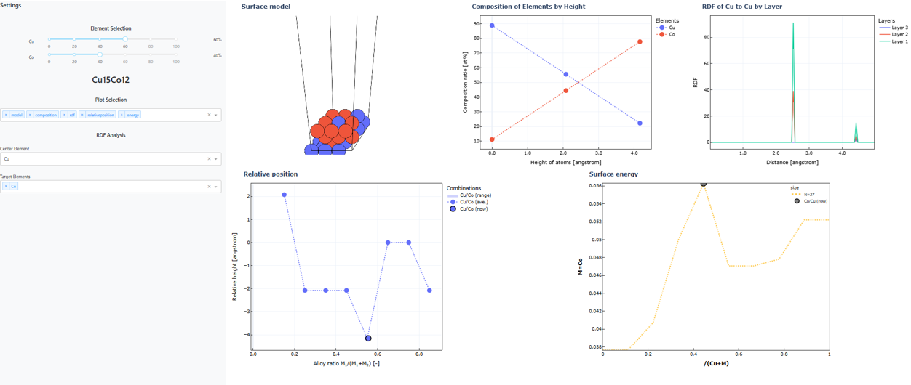
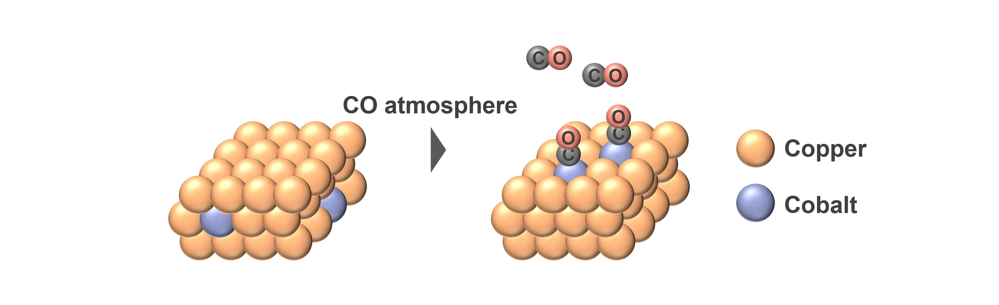
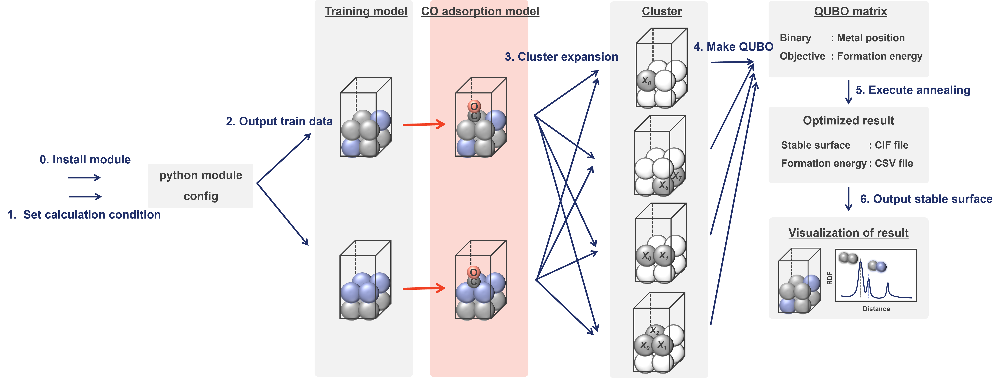
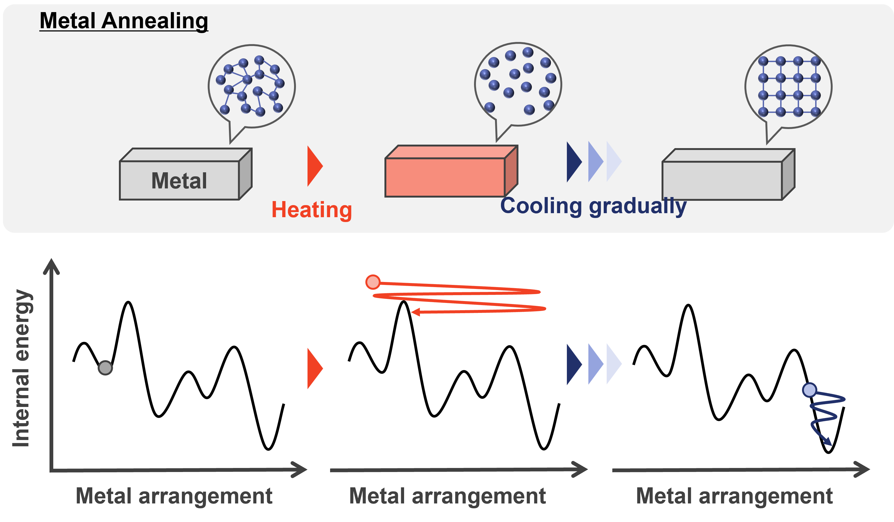

3. What is Quantum Annealing?
Quantum annealing is a computational technique designed to solve combinatorial optimization problems quickly and accurately. This page provides a detailed explanation of quantum annealing.
3.1. What is a Combinatorial Optimization Problem?
A combinatorial optimization problem is one where the goal is to find the best option among a vast number of possibilities. Such problems appear in various scenarios, from finding the shortest route to a destination to optimizing the arrangement of cargo in a truck to maximize space utilization.
By solving these combinatorial optimization problems, we can find combinations that lead to the shortest route to a destination or options that reduce fuel/electricity consumption and labor costs.
3.2. Limitations of Classical Computers
Analytical solving combinatorial optimization problems is challenging. Classical computers must either check all possible combinations or use approximation methods like neighborhood search to find better solutions.
However in real-world scenarios, such as finding the shortest route to a destination, the number of possible turns is much larger than depicted in simplified diagrams. Additionally, practical problems involve not only minimizing the distance between the start and destination but also considering factors like the order of multiple destinations and avoiding congestion.
As the scale of the data increases, the number of combinations to consider grows exponentially, requiring vast processing time and energy. With the improvement of semiconductor technology approaching its limits, solving practical combinatorial optimization problems with classical computers is becoming increasingly difficult. Moreover, approximation methods often get stuck in local minima, making it necessary to escape these local solutions to find the optimal answer.
3.3. What is Annealing?
To address these challenges, “annealing” has been proposed as a method to solve combinatorial optimization problems quickly and accurately. Annealing originally refers to the process of heating a metal to a high temperature and then gradually cooling it to improve its crystallinity and workability.
This process allows metal atoms to move randomly due to heat, eventually forming an arrangement that minimizes internal energy as the metal cools.
Thus, by reproducing the annealing process on a computer to minimize the internal energy, it is possible to find the best solution for combinatorial optimization problems.
In practice, the “metal arrangement” and “its internal energy” in metal annealing are analogized to the “combinations” and “quality of combinations” in combinatorial optimization problems. By applying the annealing algorithm, we can find the best combinations that minimize or maximize the target function.
3.4. Features and Advantages of Quantum Annealing
In traditional annealing, the “temperature” is varied to find the best solution. In quantum annealing, “quantum effects” are controlled to perform optimization using quantum properties such as quantum superposition and quantum tunneling.
- Quantum Superposition
Classical computers use bits that represent either 0 or 1. With 4 bits, they can handle 24combinations separately. In contrast, quantum computers use bits that can represent both 0 and 1 simultaneously. With 4 qubits, they can handle 24combinations simultaneously. This property, called quantum superposition, allows representation of all combinations at once, reducing the time required for combinatorial optimization.
- Quantum Tunneling
Classical computers often get stuck in local minima during neighborhood search methods, requiring significant energy to overcome barriers. Quantum computers can “tunnel” through energy barriers without overcoming them, a phenomenon known as quantum tunneling. This ability facilitates escaping local minima and finding the optimal solution, improving the accuracy of combinatorial optimization.
Thus, by enhancing and gradually decreasing quantum effects, quantum annealing can find the best options for combinatorial optimization problems quickly and accurately.
3.5. Applications and Challenges of Quantum Annealing
Quantum annealing is being applied to practical and experimental cases in fields such as finance, transportation, materials science, and drug discovery.
However, challenges remain, such as the difficulty of formulating the target functions for optimization and insufficient qubits. Future developments are expected to improve function formulation and increase the number of qubits.